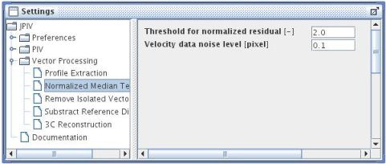

home
download
introduction
quick start
how to
reference
scripting
javadoc
repository
troubleshooting

settings-panel: Vector Processing - Normalized Median Test.
Normalized Median Test
These are the settings for the normalized median test proposed by Jerry Westerweel and Fulvio Scarano (Experiments in Fluids (2005) 39: 1096-1100).
For the i=1,...,8 neighbouring vectors of the vector in question, i=0, consider the eight residual values ri=|di-dm|. di is the displacement of the eight neighbouring vectors in one direction, and dm is the median of those displacements. The median rm of the eight residuals ri is used to normalize the residual of the displacement in question, r0=(d0-dm)/rm.
The threshold for the normalized residual, r0 can be set in the first text field. All vectors that have a larger residual in one or the other direction than specified are invalidated. This does not mean to change the displacement data, but to set the flag in the fifth column to -1.
The noise level (next text field) basically prevents a division by zero, if the median of the residuals, rm, happens to be zero. This value is added to rm before the division. In the above mentioned publication, 2.0 for the threshold, and 0.1 for the noise level are recommended, universal values to start with.